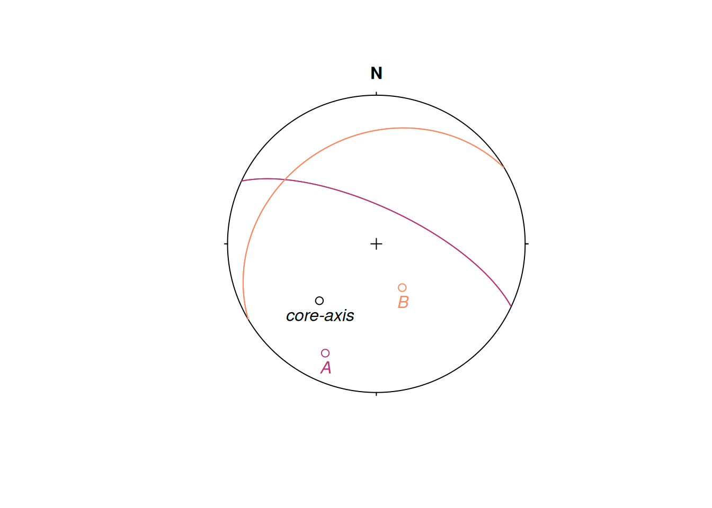

This vignette describes how to convert alpha-beta (and gamma) measurements from oriented drill cores into geological planes and lines using the drillcore_transformation() function of the {structr} package.
Orientations in drill cores are usually given by α and β angles (lineations on a plane additionally have a γ angle), which describe orientations with respect to the drill orientation. To convert these angles from the “drill core coordinate reference system” to our geographical reference system1, you can use the function drillcore_transformation().
This function calculates the orientation of a plane or line from internal core angles (α, β, and γ) of oriented drill cores, using the azimuth of the drill core axis (azi in degrees, measured clockwise from North), and the inclination of the drill core axis (inc in degrees, positive downwards from horizontal).
azi <- 225
inc <- 45Note
Note that negative values for the inclination indicate upward direction.
alpha and beta are the internal core angles alpha and beta, respectively, measured in degrees.
drillcore_transformation(azi, inc, alpha = 60, beta = 320)
#> Plane object (n = 1):
#> dip_direction dip
#> 25.00392 70.02959The function returns a spherical object. Since only alpha and beta angles are specified, the output is a "Plane" object.
For several alpha and beta angles:
planes_AB <- drillcore_transformation(azi, inc, alpha = c(60, 45), beta = c(320, 220))The orientations can be plotted in an equal-area (lower hemisphere) projection:
# initialize plot:
stereoplot()
# plot the core axis (azimuth and inclination)
points(Line(azi, inc))
text(Line(azi, inc), lab = "core-axis", pos = 1, font = 3)
# plot the plane orientations as poles...
points(planes_AB, col = c("#B63679FF", "#FB8861FF"))
text(planes_AB, lab = c("A", "B"), col = c("#B63679FF", "#FB8861FF"), pos = 1, font = 3)
# ... and as great circles
lines(planes_AB, col = c("#B63679FF", "#FB8861FF"))